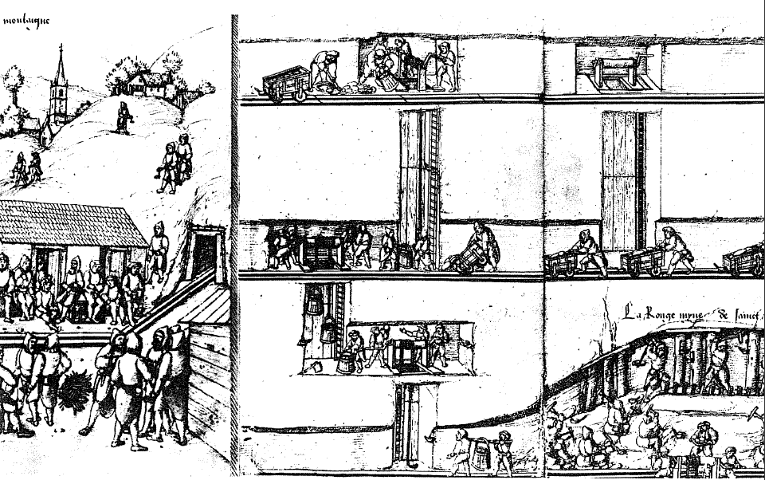

Demiri fakir akraba olarak nitelemenin XV. yüzyıldan itibaren, a fortiori XVIII. yüzyılda bütün dünyanın insanlarına ne ciddi, ne de gerçeğe benzer olarak gözükeceğinden emin değiliz. Montbard'da dökümhane ustası Buffon buna ne derdi? Aslında bu yakın ve uzak dönem, biz XX. yüzyıl insanlarına şaşırtıcı, ve bir bakış açısından dar çaplıymış gibi gözükmektedir.
Demir metalürjisi, kabaca günümüz yöntemlerinin aynını, yüksek fırınlar ve şahmerdan kullanmaktadır, ama miktar tüm farkı yaratmaktadır. Bugün bir yüksek fırın “yirmi dört saatte üç tren yükü kok ve cevher tüketirken, XVIII. yüzyılda bu araçların en gelişmişleri ancak aralıklı olarak çalışmakta ve örneğin iki ateşli bir maden arıtıcısıyla birlikte, yılda ancak 100 veya 150 ton demir verebilmekteydi. Günümüzde üretim bin ton cinsinden hesaplanmaktadır; bundan iki yüz yıl önce “cents pesants"dan, yani bugünün 50 kg.'ına eşit kentallerden söz edilmekteydi. Ölçek farkı işte böyledir. Bu fark iki uygarlığı ayırmaktadır. Morgan'ın 1877'de yazdığı üzere, “demir en önemli üretim malzemesi haline geldiğinde, bu insanlığın evrimindeki olayların olayı olmuştur”. Polonyalı bir iktisatçı olan Stefan Kurowski, ekonomik hayatın tüm nabız atışlarının, metalürji endüstrisinin ayrıcalıklı örneğinden hareketle yakalanabileceğini savunacak kadar ileri gitmiştir: bu endüstri her şeyi özetlemekte, her şeyi haber vermektedir.
Fakat XIX. yüzyılın başına kadar “olayların olayı” henüz ortaya çıkmamıştır. 1800'de, dünyanın çeşitli biçimler altındaki (döküm, dövme demir, çelik) üretimi ancak 2 milyon tona çıkmaktadır127 ve ayağı yere yarım basan bu rakam, bize çok şişirilmiş gibi gelmektedir. Ekonomik uygarlık o sıralar demirden çok daha fazla, dokumanın egemenliği altındadır (İngiliz devrimini, her şeyden sonra başlatacak olan pamuktur).
Bu durumda metalürji geleneksel, köhne, narin bir dengede olmaya devam etmektedir. Doğaya, kaynaklarına, ne mutlu ki bol olan cevhere, asla yeterli olmayan ormana, su yataklarının değişken gücüne bağımlıdır: XVI. yüzyılda İsveç'te köylüler demir imal etmektedirler, ama yalnızca ilkbaharda sular yükseldiğinde; fırının yer aldığı yerde, her nehir alçalması işsizliğe yol açmaktadır. Nihayet, iyice uzmanlaşmış işçi ya azdır, ya da yoktur; Alsace'da olduğu kadar İngiltere veya Urallarda bu işi çoğu zaman basit köylüler yapmaktadır. Avrupa'da çok sayıda demirhane ustası, her şeyden önce toprak sahipleridir ve demir fabrikalarının işletme işini kâhya veya kiracılara bırakmaktadırlar. Sonuncu rastlantısallık: talep, çıkan sonra da sönen savaşlara bağlı olarak, belli zamanlarda ortaya çıkmaktadır.
Olaylar çağdaşlara tabii ki böyle gözükmemektedir. Demirin madenlerin en yararlısı olduğunu istekle ilân ediyorlardı ve hepsi de bir demirhane (en azından bir köy veya nalbant demirhanesi), bir yüksek fırın, bir ocak, bir arıtma tesisi görme fırsatına sahip olmuştur. Aslında kural, dağınık, yerel üretim veya kısa mesafeli iaşe olarak kalmaktaydı. Amiens XVII. yüzyılda demirini, kendi pazarından en azından 100 km. uzaklıkta olan Thierarche'tan getirtmekte, ve bunu 50 veya 100 km.'lik bir çap içinde dağıtmaktaydı. Bir önceki yüzyıla ilişkin olarak, küçük Avusturya kenti Judenburg'da (Obersteiermark'da), civar demirhanelerden veya faal Leoben merkezinden demir, çelik, metalürji ürünleri toplayıp, sonra onları yeniden sevkeden tüccarlarından birinin defterine sahibiz. Alımların, satışların, taşımaların, fiyatların, ölçülerin ayrıntısını günü gününe izlemek ve ham demirden, çubuk demirden, çeşitli çeliklere, demir tele (kalını “alman”, incesi welsch) varıncaya kadar; iğne, çivi, makas, soba, teneke araçları hesaba katmaksızın sayılamayacak kadar çok cinsin sıralanması arasında kaybolmak mümkündür. Ve bunlardan hiçbiri iyice uzağa gitmemektedir: aslında yüksek bir fiyatı olan çelik bile, Alpleri Venedik yönünde aşamamaktadır. Eğer Toledo kılıçları, Brescia zırhları veya Judenburglu tüccarımıza geri dönecek olursak, Anvers'in ondan talep ettiği kundaklı oklar gibi lüks eşyalar hariç tutulacak olursa, metalürjik ürünler kumaşlarla kıyaslanabilecek yolcular değillerdir. Metalürjik ürünlerin büyük mübadele hattı (XVI. yüzyılda Cantabria bölgesinden; XVII. yüzyılda İsveç'ten; XVIII. yüzyılda Rusya'dan itibaren) nehir ve deniz yollarından yararlanmakta ve ileride göreceğimiz gibi, yalnızca mütevazi miktarlar taşımaktadır.
Kısacası, XVIII., hatta XIX. yüzyıldan önce Avrupa'da (ve tabii ki bu, Avrupa dışında daha da doğrudur), demir üretilen ve kullanılan kitlesiyle, maddi uygarlığı kendi tarafına eğmeye yeterli değildir. Çeliğin ilk eritme yoluyla elde edilmesinden önce, puddllamanın keşfinin öncesinde, kok kömürüyle döküm elde edilmesinin öncesinde, ünlü adlar ve yöntemlerin uzun dişinin öncesinde bulunmaktayız: Bessemer, Siemens, Martin, Thomas... henüz başka bir gezegendedirler.
Eski Dünya'da keşfedilen demir metalürjisi, burada herhalde Kafkaslardan hareketle ve M.Û. XV. yüzyıldan itibaren, çok erkenden yayılmıştır, Eski Dünya'nın tüm uygarlıkları bu ilkel mesleği az veya çok erken, iyi veya kötü öğrenmişlerdir. Yalnızca iki gelişme göz kamaştırıcıdır: kendini çifte esrara sahip bir harika olarak sunan Çin'in erken gelişmesi (esrar bir yandan erkenliğinden, bir yandan da, XIII. yüzyıldan itibarenki duraklamasından kaynaklanmaktadır); diğeri de Avrupa'nın gecikmeli, ama belirleyici gelişmesi.
Çin, erkenliğin tartışılmaz ayrıcalığına sahip olmuştur: M.Ö. V. yüzyıla doğru demir dökümünü bilmektedir; taş kömürünü erkenden kullanmıştır ve belki de M.S. XIII. yüzyılda, bu nokta çok sorunlu olmakla birlikte, kok kömürüyle cevherin saflaştırılması yöntemini uygulamıştır. Oysa, Avrupa demiri sıvı halde, XIX. yüzyıldan önce elde edemeyecektir ve XVII. yüzyılda olduğundan kuşku duyulan kokla saflaştırma, İngiltere'de ancak, kabaca 1780'li yılların ötesinde cari hale gelebilecektir.
Çinlilerin bu erkenciliği bir sorun çıkartmaktadır. Taş kömürü kullanımı, kuşkusuz yüksek ısılara ulaşılmasına olanak vermiştir, kullanılan cevher yüksek bir fosfor tenörüne sahip olduğundan, nisbeten düşük ısılarda erimektedir; nihayet insanlar veya kanatlı dolaplar tarafından çalıştırılan pistonlu körükler, sürekli bir üfleme ve fırınların içinde yüksek ısılar sağlamışlardır. Bunlar bizimkilerle hiçbir ilgileri olmayan fırınlardır: bunlar aslında “dikdörtgen biçimli ve çok yüksek ısılara dayanıklı örme çukurlardır”; bunların içinde bir dizi pota bulunmaktadır ve bunların da içine cevher konulmaktadır. Demek ki cevher yakacakla doğrudan temasta değildir ve yakacağa, odun kömürü de dahil, istenildiği kadar şu veya bu maddeden katılabilir: Potanın içindeki, birbirini izleyen eritmeler ya karbonundan tamamen arınmış, işlenmeye yatkın bir demir, ya da şu veya bu derecede karbon içeren demir elde edilmesine izin vermektedirler, yani az veya çok yumuşak bir çelik elde edilmesine. Potanın içinde birbirini izleyen iki eritmeden sonra, elde edilen ürün Çinlilere pulluk demiri veya tencereleri seri halinde dökme olanağı sağlamaktadır. Batı bu sanatı 18 veya 20 yüzyıl kadar sonra tanıyacaktır. Bunun sonucunda, A. G. Haudricourt'un dilbilimsel veriler üzerine dayalı tezleri ortaya çıkmaktadır. Yani erimeyi sağlayan ve XIV. yüzyılda Styria ve Avusturya'daki yüksek fırın, stückofen'm yerine geçen flussofen, önce Orta Asya'ya, sonra Sibirya'ya, Türklere ve Rusya'ya ulaşan Çin tekniğinin transferinin nihai aşamasından başka bir şey değildir.
Asya'nın potada eritme yöntemi, aktifinde başka bir başarıya daha sahiptir: bazılarının köken olarak Hindli, diğer bazılarının da Çinli olduğuna inandıkları, özel bir çelik imalatı; bugünün en iyi hiperötekloid çeliklerine eşit "yüksek kalitede, karbonlu bir çelik”. Bu çeliğin doğası ve imalatı Avrupalılar için, XIX. yüzyıla kadar bir sır olarak kalmıştır. Avrupa'da Şam çeliği, İran'da poulad jauherder (yani “dalgalı çelik”) olarak, Rusya'da boulat olarak bilinen, daha sonra İngilizler tarafından wootz olarak vaftiz edilen bu çelik, her şeyden önce olağanüstü keskinlikteki kılıç bıçaklan yapımında kullanılmaktaydı. Bu çelik, Avrupalılar buraya geldiklerinde, Hindistan'da Golkonda krallığında imal edilmekte ve Tavernier'nin küçük bir ekmek büyüklüğünde olarak tasvir edip, 600-700 gram ağırlığında olduğunu söylediği külçeler halinde satılmaktaydı. Bunlar Uzak Doğu'ya bile, Japonya'ya, Arabistan'a, Suriye'ye, Rusya'ya ve İran'a geniş ölçekte ihraç edilmekteydiler. Chardin 1690'a doğru, İranlıların “onlarınkinden kötü, bizimkinden iyi” saydıkları bu Hind çeliğinden, en güzel kılıç bıçaklarını yaptıklarını açıklamaktadır. Bu çeliğin özelliği: potanın içindeki soğumanın, maden kitlesinin içinde beyaz karbon damarlarını, büyük bir sertlikteki bir demir karbürünü kristalize ettiği sırada meydana gelen bir hare, "dalgalı” bir desendir. Çok yüksek fiyatı olan bu çeliğin ünü öylesine büyüktür ki, Portekizliler 1591'de, bundan yüklenmiş bir gemiye Hind kıyıları açıklarında el koymuşlar, ama Lizbon veya İspanya'da hiçbir demirci onu işlemeyi başaramamıştır. Aynı kötü macera, Kahire'den bir örnek getirten ve bunu Parisli zenaatkârlara teslim eden Reaumur'ün de (1683-1757) başına gelmiştir. Gerçekten de, kırmızı oluncaya kadar ısıtılan wootz, çekiç yiyince kırılmakta ve haresi kaybolmakladır. Ancak düşük ısıda veya potada yeniden eritilip, dökülerek işlenebilmektedir. XIX. yüzyılın ilk onyılları esnasında, Batılı birçok bilgin ve Rus metalürji mühendisi, wootz'un sırlarını, tutkuyla incelemişlerdir ve bunların araştırmaları, bizzat metalografyanın başlangıcını oluşturmuş olmalıdır.
Bu olgular bütünü, tartışmasız bir şekilde Hind'e, Şam çeliğinin babalığının atfedildiğini açıklamaktadır. Fakat IX. ve XI. yüzyıl Arap ve İran kaynaklarıyla, daha eski Çin kaynaklarına dayanan göz kamaştırıcı bir makalede Ali Mazaheri, Hind çeliğinin (Çin dökmesi gibi potada imal edildiğini kaydedelim) Çin kökenli olduğu varsayımını ileri sürmüş ve enli kılıcı (pala) potada eritilmiş Asya çeliğine katarken, ince kılıcı (epe) Batının dövme çeliğine katmış ve Şam çeliğinden yapılma palanın Asya'da yayılıp, Türkistan'a ve İskit fethiyle Hind'e temas ederken, sonra İran, İslam ülkeleri ve bizzat Moskof devletine ulaşırkenki şaşırtıcı tarihini çizmiştir. Sasaniler dönemi İranlılarının kaba demirden kısa bir kılıçla silahlanmış Roma legionları üzerindeki seyirlik zaferleri, her şeyden önce İranlı süvarilerin, Batı silahlarından çok üstün Şam çeliğinden palalar kullanmalarına bağlı olmalıdır. Ve nihayet, “Roma dünyası ve Orta Çağ Avrupa'sı üzerine çöken... Asyalı göçebelerin üstünlüğünü palaya -ve Çin’e- atfetmek gerekmektedir”.
Saçma olan nokta, böylesine bir erkencilikten sonra, XIII. yüzyıldan sonraki Çin duraklamasıdır. Artık hiçbir şey ilerlememektedir, Çinli dökümcü ve demircilerin başarıları artık tekrarlardan ibarettir. Kok kömüründe eritme, eğer bilindiyse bile, gelişmemektedir. Bütün bunları farketmek, açıklamak güçtür. Fakat Çin'in kaderi, bütünlüğü içinde, henüz bulanık ve iyi çözülememiş aynı problemi ortaya koymaktadır.
Diğer sorun: Avrupa'nın gecikmeli başarısı. Orta Çağ metalürjisinin başlangıçları Sieg veya Sarre vadilerinde, veyahut Seine ile Yonne arasındaki bölgede farkedilmektedir. Demir cevheri hemen hemen heryerde bulunmaktadır; yalnızca Avrupa'da La Tene çağından beri çıkartılan meteor kaynaklı saf demir nadirdir. Kırılan, yıkanan, gerektiğinde ateşte kızdırılan cevher; çok çeşitli biçimler alabilen fırınların içine, bir sıra odun kömürü, bir sıra cevher olmak üzere yerleştirilmektedir. Örneğin Seine ile Yonne arasındaki Othe ormanında, tepe eteklerine açılan çukurlar, içine duvar örülmemiş ve “rüzgâr fırını” denilen ilkel fırınlar meydana getirmekteydiler. Fırın ateşlendikten sonra, iki veya üç gün içinde, curufu bol, küçük bir süngerimsi demir kitle elde edilmektedir; daha sonra bu kitleyi elle döverek işlemek, yeniden ısıtmak (birçok “sıcak”a koymak), sonra da örs üzerinde dövmek gerekmektedir.
Daha karmaşık, örme duvarlı, ama henüz kapalı olmayan fırınlar erkenden ortaya çıkmışlardır; bunlar artık doğal bir havalandırmayla (basit bir bacanınki gibi) yetinememektedirler. Örneğin, kazılarda ortaya çıkartılan, Sarre bölgesindeki Landenthal fırını, 1000 ve 1100 yılları arasında çalışmıştır; bu fırının kalıba dökülüp, pişirilmiş kil cidarları vardır, bunlar tahta lataların üzerine oturtulmuştur, fırın 1,5 m. yükseklikte ve en fazla 0,65 m. çapında olup (koni biçimindedir), iki körüğe sahiptir. Bu imge, birkaç değişiklikle birlikte, bir dizi Korsika, Katalonya, Normandiya (bunlar, ossmurd adını taşıyan İsveç cevherini işlemek içindir) fırını için de geçerli- dir. Bu fırınların hepsi de duvar kaplı, ama üstten kapatılmamıştır ve düşük verimli, vasat körüklere sahiptir. Bir büyüklük sıralaması: % 72 demir tenörü olan bir cevher, % 15 civarında bir madeni kitle verecektir. Tabii ki bu imge, XI. yüzyılın ötesindeki ilkel metalürjiler için de, yani Avrupa'nın köylü metalürjileri (çok canlı) veya Eski Dünya'nın az gelişmiş halklarınınki için de geçerlidir.
Su dolabı XI. ve XII. yüzyıllardan itibaren, Avrupa'da belirleyici gelişmelere yol açmıştır. Çok yavaş olan bu gelişmeler, gene de ucundan ucundan tüm büyük üretici bölgelere yerleşeceklerdir. Orman demirhanelerinin yerine, nehir kıyısı demirhaneleri geçmiştir. Suyun hareketi koskocaman körükleri, cevheri kıran tokmakları, çeşitli “ısıtmalar”dan sonra demiri döven çekiçleri harekete geçirmektedir. Bu gelişmeler, XIV. yüzyılın sonunda çalışmaya başlayan yüksek fırına eşlik etmişlerdir. Almanya'da ortaya çıkan (veya belki de Alçak Ülkeler'de) yüksek fırın, erkenden Doğu Fransa'ya ulaşmıştır. Örneğin yüksek Marne vadisinde yüksek fırın kullanılırken, Poitou, Aşağı Marne ve tüm Batı Fransa'da elle işletilen demirhaneler, XVI. yüzyıla kadar, orman içlerinde yaşamaya devam edeceklerdir.
Styria yeni gelişmelerin iyi bir örneğidir. XIII. yüzyılda tamamen duvar kaplı ve el körükleri olan rennfeuer (fırın) ortaya çıkmıştır; XIV. yüzyılda, bir öncekinden daha yüksek ve suyla işleyen körükleri olan stûckofen (büyülteçli fırın) belirmiştir; stückofen'a benzeyen ama daha yüksek olan ve blâhhaus'da (bu ad 1389 tarihli bir belgede gözükmektedir) gruplanmış bir ön-potası olan yüksek fırınlar ise, aynı yüzyılın sonuyla birlikte görülmeye başlamışlardır. Suyla hareket ettirilen muazzam deri körüklerin ve yüksek fırın kazanlarının devreye sokulmasıyla önemli hale gelen şey, ilk deh füzyon'a ulaşılmış olmasıdır; bunun anlamı, demir dökümünün XIV. yüzyılda “icad edildiğindir. Bundan sonra, artık dökme demirden hareketle, çıkış noktaları aynı olan ileri dekarbürasyonla demir veya eksik dekarbürasyonla çelik, istenildiği kadar elde edilebilecektir. Styria'da çelik üretmeye gayret edilecektir. Fakat eski metalürji, XVIII. yüzyılın sonunda ortaya çıkacak iyileştirmelere kadar, çoğu zaman çelik değil de, “çelikli demir” elde edecektir.
Bu arada, yüksek fırından ayrılan demirhane, nehrin akış yönünde daha aşağı kaymıştır, çünkü fabrika bütün halinde kaldıkça çok büyük bir yakacak tüketicisi haline geliyor, bu da iaşeyi zorlaştırıyordu. 1613 tarihli bir kroki, daha aşağıya kaymış olan ve onunla bağlantılı çalışan demirhanesinden ayrılmış bir bldhhaus'u yalnızlığı içinde göstermektedir. Bu demirhane, su gücüyle işleyen büyük bir çekice, “Alman çekici”ne, tokmağa sahiptir: muazzam bir meşe kalas bu tokmağın sapını oluşturmaktadır; başını meydana getiren demir kitlesi 500-600 libre çekebilmektedir; bu tokmak tırnaklı bir tekerlek tarafından kaldırılmakta, sonra tekerlek tokmağı örsün üzerine düşürmektedir. Bu muazzam vurma gücü, artık büyük miktarlarda üretilen ham madeni işleyebilmek için zorunlu hale gelmiştir. Ancak, demirin nihayetsiz bir şekilde yeniden işlenmesi gerektiğinden, İtalyan tarzı denilen küçük çekiçler de bulunmaktadır. Bunlar hızlı darbelerle çalışmaktadırlar ve örneği herhalde, eski demir başkenti olan Brescia'dan Friulili işçiler aracılığıyla getirilmiştir.
Bu gelişmeleri resmeden başka bir örnek, bizi Batı Alplere götürecektir. Bu örnek, metalürjinin ilk atılımında Chartreux keşişlerinin önemli rolünü işaret etme gibi bir avantaja sahiptir. XII. yüzyıldan itibaren, bu keşişler Styria, Lombardiya, Carinthia, Piemonte'ye yerleşmişler ve “bizzat (modern çağ öncesi) demir sanayiinin icadına sıkı sıkıya ortak olmuşlardır”. Dauphine'de Allevard'da, bu keşişler XII. yüzyılda dökmeciliğin mucidi olmuş olmalıdırlar. Her halükârda buradaki demircilik Styria veya başka yerlerdekinden, açıkça daha erkendir, çünkü burada, tek başlarına bir Alp fırtınasının tümünü yakalayabilen muazzam trompe'lar (hortum) sayesinde, erkenden kaba bir havalandırma uygulamaya konulmuştur. 1172'den itibaren Tirollü işçilerin gelmesiyle birlikte, erimiş demirin odun kömürü ateşi ve hurda demir katılmasıyla saflaştırılmasına yönelik bir yöntem, doğal denilen bir çeliğin imaline olanak vermiştir. Bütün bu kronoloji az güvenilir niteliktedir.
Fiili durumda her merkez kendi özel aşamalarına, kendi yöntemlerine, özellikle de arıtma konusunda kendi sırlarına, kendi müşterilerine, çeşitli ürünler arasında kendi tercihlerine sahip olmuştur. Fakat teknikler nereden gelirlerse gelsinler, isterse yer değiştirmede aceleci zenaatkâr hareketiyle olsunlar, genelleşme eğilimindedirler. Minik bir örnek: 1450'ye doğru “Liege doğumlu” iki işçi, Senlis yakınlarındaki Avelon üzerinde “bir dökme veya demir atelyesi kurmak üzere bir su arkı yapmak için” iş bulmuşlardı.
Tüm yüksek fırınlar er veya geç sürekli ısıtmalı hale geleceklerdir; her erimiş cevher akıtılışından sonra, fınn hemen odun kömürü ve cevherle doldurulacaktır. Bakım veya iaşe için meydana gelen kesintiler, giderek daha uzun aralıklarda olacaktır. Ve yüksek fırınlar büyümektedir: 1500 ve 1700 arasında kapasitelerini iki katına çıkartarak, 4,5 m3'e kadar ulaşmışlar ve günde iki ton dökme demir vermeye başlamışlardır. Karbon tenörünü artırmak üzere, demiri ergime halindeki dökümün içine batırma adeti de genelleşmektedir.
Savaşın yardımıyla zırhlar, kılıçlar, kargılar, çakmaklı tüfekler, toplar, demir gülleler konusundaki talepler artmaktadır. Bu emredici talepler, tabii ki belli bir zaman devam etmektedirler. Dönüşümler zor olmaktadır, ama demir veya döküm mutfak eşyaları, kazanlar, tencereler, parmaklıklar, ocak ızgaraları, şömine levhaları, pulluk demirleri yapmaya yaramaktadır. Bu çoklu talepler şişerken, yoğunlaşmalara veya daha doğrusu, önyoğunlaşmalara yol açmaktadır, bunlar henüz biraz gevşektir, çünkü taşıma, yakacak, belli bir noktada seferber edilebilecek motor güç, yiyecek-içecek iaşesi, faaliyetlerin kesintili edası çok fazla ilerlemiş birikmelere izin vermemektedir.
XV. yüzyılın sonunda Brescia'da herhalde 200 silah imalathanesi vardır; bundan bir usta ile 3 veya 4 işçinin çalıştığı botteghe adlı atelyeleri anlayınız. Bir metin, demir işleyen 60.000 kişiden söz etmektedir, bu hesabın içine Val Camonica kadar uzak yerlerdeki fırın (fermi) işçilerini, demirhane (fucina) işçilerini, su dolaplarında (mola) çalışanları, cevher çıkartan kazıcı ve madencileri, taşımayı gerçekleştiren arabacıları, kentin etrafında 20 veya 30 km.'lik bir çap içinde dağılmış olan herkesi katmak gerekiyorsa da, bu rakam gene de abartılıdır.
XVI. yüzyılda, 100 km'den fazla bir çap içindeki birçok küçük metalürji merkezinin ürünlerini toplayan Lyon'da da durum aynıdır. Saint-Etienne'de küçük işletmeler önem sırasına göre şöyledir: hırdavatçılık, çakmaklı tüfekler, kargılar ve daha önemsiz miktarlarda, kılıç ve hançer süsleridir; Saint-Chamon'da, hırdavatçılık, çakmaklı tüfek, kıvrık kenarlı kalkanlar, halkalar, üzengiler, eğeler ve ipek değirmenleri veya boyacılığı için gereken araçlar: bakır leğenler, “değirmen masuraları”... ikincil merkezler, örneğin Saint-Paul-en-Jarez, Saint-Martin, Saint-Romain, Saint-Didier gibi olanları çivi yapımında yoğunlaşmışlardır; Terre Noire hırdavatçı eşyaları: Saint- Symphorien “ulle ya da demir çanakları”; Saint-Andre çiftçilik aletleri imal etmektedir: bel, saban için gereken demir aksam. Biraz ayrı bir durumda olan Viverols “katır kampanaları” üretmektedir (belki de bu kent, Lyon'un büyük İtalyan tüccarlarının krallık dışına ihraç ettikleri şu küçük çıngırakların ortaya çıktığı yerdir). Saint- Bonnet-le-Château (koyun) kırkma makaslarında ün yapmıştır.
Örneğin çiviciler gibi zenaatkârlar, mallarını büyük kente bizzat getirmekte ve hayvanlarının yükünü küçük bir miktar kömür ile tamamlamaktadırlar. Bu durum, Lyon'un ev ısıtması alanında (hatta Vaise mahallesi kireç fırınlarında) yabancısı olmadığı taş kömürünü, bu endüstrinin kullandığını ve metalürji alanında nihai ürünün hammaddeden daha iyi veya daha az kötü tedavül ettiğini kanıtlamaktadır.
Nuremberg'de ve kentin etrafındaki hırdavatçıların çoklu faaliyetini, XVII yüzyıldaki İsveç metalürjisinin faaliyetleri; Ural endüstrisinin XVIII. yüzyıldaki atılımı; Biscaye veya Liege bölgesi endüstrisinin özel koşulları incelenecek olursa; üretim birimlerinin küçüklüğü, bunların nisbi dağınıklığı ve taşıma güçlükleri konusundaki farkına varışlar aynı olacaktır. Yoğunlaşma ancak bir nehir veya deniz yolunun kendini sunduğu yerde olmaktadır: Ren, Baltık, Meuse, Gaskonya körfezi, Ural. Biscaye'da Okyanus'un, hızlı akan sularıyla bir dağın, gürgen ormanlarının, zengin maden yataklarının varlığı, buradaki önemli bir maden endüstrisinin mevcudiyetini açıklamaktadır. İspanya XVIII. yüzyılın ortasına kadar İngiltere'ye demir satmaya devam etmekte ve İngiltere de, denizlerde İspanyol donanmalarıyla çarpışan gemilerini İspanyol demiriyle donatmaktadır.
1800 civarı için, dünya üretimine ilişkin olarak ileri sürülen 2 milyon ton rakamının kesinlikle aşırı olduğunu söylemiştik. Endüstri devrimi öncesinde, bu dünya üretiminin, Avrupa'nınkinin iki veya üç katı olduğunu varsaymamız halinde; Avrupa kıtasının üretimi 1525 civarında (John Nef'e göre) 100.000 tonu; 1540 civarında (bize aynı zamanda, izleyen rakamları da ödünç veren Stefan Kurowski'ye146 göre) 150.000 tonu; 1700'lerde 180.000 tonu (bunun 12.000 tonu İngiltere, 50.000 tonu İsveç üretimidir); 1750'de 250.000 tonu (22.000 İngiltere, 25.000'i Rusya üretimi); 1790'da 600.000 tonu (80.000’i İngiltere, 125.000’i Fransa, 90.000’i İsveç, 120.000’i Rusya üretimi) asla geçmemiştir. Avrupa üretimi 1810'da henüz 1.100.000 ton; 1840'ta 2.800.000 tondur (bunun aşağı yukarı yarısı İngiltere'ye aittir). Fakat bu sıralar ilk endüstri devrimi işe başlamıştır bile.
1970'li yıllarda Avrupa, lato sensu 720 milyon ton çelik demektir. Bunun anlamı, bu kitabın kapsadığı zaman boyutu içinde, demir çağının henüz yerine yerleşmediğidir. Endüstri devriminin büyük eşiği geriye doğru aşılacak ve zaman içinde geriye gitmeye devam edilecek olursa, demirin rolünün azaldığı görülecektir; bu da ona, Eski Rejim'de kural olan ölçülülüğü iade etmek demektir. Nihayet, bir savaşçı zırhının “üç çift öküz, bir kılıcın yedi, atın dizgininin hayvanın kendinden fazla ettiği” Homeros dönemini koşunun sonunda yeniden bulmak demektir. “Bizim” dönemimiz, yani bu kitabın ele aldığı dönem, hâlâ bir uçtan öbürüne, her yerde hazır ve nazır olan odunun egemenliği altındadır.
Biz tarihçiler ilk sıraya kitle üretim veya ticaretlerini koyma alışkanlığına sahibiz; baharat değil de şeker, veya daha iyisi buğday; nadir veya değerli madenler değil de, hizmetlerine karşı pek fazla açlık duyulmayan bu yüzyıllarda bile, gündelik hayatın temeli olan demir. Nadir, ama çok mütevazi bir şekilde kullanılan madenlere ilişkin olarak, bu bakış haklıdır: antimon, kalay, kurşun, çinko (bu maden ancak XVIII. yüzyılın sonunda kullanılmıştır). Fakat tartışma sonuca varmamıştır, altın ve gümüş gibi değerli madenleri de buraya katmak gerekmektedir. Bu madenler spekülasyonlara, proleter maden demirin bilmediği girişimlere yol açmaktadır. Deha hâzineleri gümüş için harcanmıştır. Agricola'nın madenler hakkındaki kitabında yer alan genel şemalar veya Vosgelardaki Sainte-Marie-aux Mines madeni galeri ve kuyulannın etkileyici bir kesitinde, bu durum görülmektedir. İspanya'daki Almaden değerli cıva yatakları (alaşım yöntemi XV. yüzyılda ve özellikle XVI. yüzyıldan itibaren gümüşü bir endüstriyel üretim madeni haline getirmiştir) gümüş için donatılmışlardır; madencilik alanındaki ilerlemeler (galeriler, su çekme, havalandırma) gümüş için gerçekleştirilmişlerdir.

Vosgelcırda, la Croix-de-Lorraine gümüş madenleri, XVI. yüzyılın ilk yarısı: kuyular, merdivenler, çıkrıklar, cevher taşınması için elarabaları. La Croix köyündeki bu madenler 1670'e kadar işletilmişlerdir. Cabinet des Estampes.
O sıralar bakırın demirinkine eşdeğer, hatta daha yüksek bir rol oynadığı bile savunulabilir. Tunç parçalar topların aristokrasisini meydana getirmektedirler. Teknelerin gövdesini bakır ile kaplamak XVII. yüzyılda genelleşmiştir. Bakırın XV. yüzyıldan itibaren kurşun yöntemiyle, çifte eritilmesi, cevherin içinde yer alan gümüşü açığa çıkartmaktadır. Öte yandan bakır, metalürjisinin nisbi kolaylığının (yansıtıcılı bir fırın günde 30 ton bakır elde edebilmektedir) ve ilk kapitalizmin sayesinde teşvik bulmuştur, bu durum Saksonya'daki Mansfeld bakır madenlerinin XVI. yüzyıldaki hızlı yükselişini, daha sonra XVII. yüzyılda İsveç bakırının boom'unu, nihayet yolculuğunun sonunda Oost Indische Companie tarafından tekelleştirilen Japon bakırının aynı sıralar temsil ettiği spekülasyonu açıklamaktadır. Jacques Coeur ve ondan daha fazlasıyla Fuggerler, bakır kralları olmuşlardır, izleyen yüzyılda bile, Amsterdam borsasında, gözlerimiz kapalı olarak bakıra oynayabilirdik.